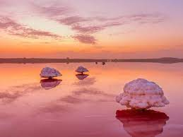
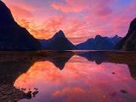

There are supposedly only eight pink lakes Masazir Lake in Azerbaijan gets its vibrant color from microorganisms called halophiles. These have helped the lake produce salt since 1813. Its use is limited to extracting salt rather than for swimming.

"What an amazing sunset this was," photographer said. "As the tide raced in I kept relocating my tripod further and further back until the light peaked and I captured this amazing moment."
